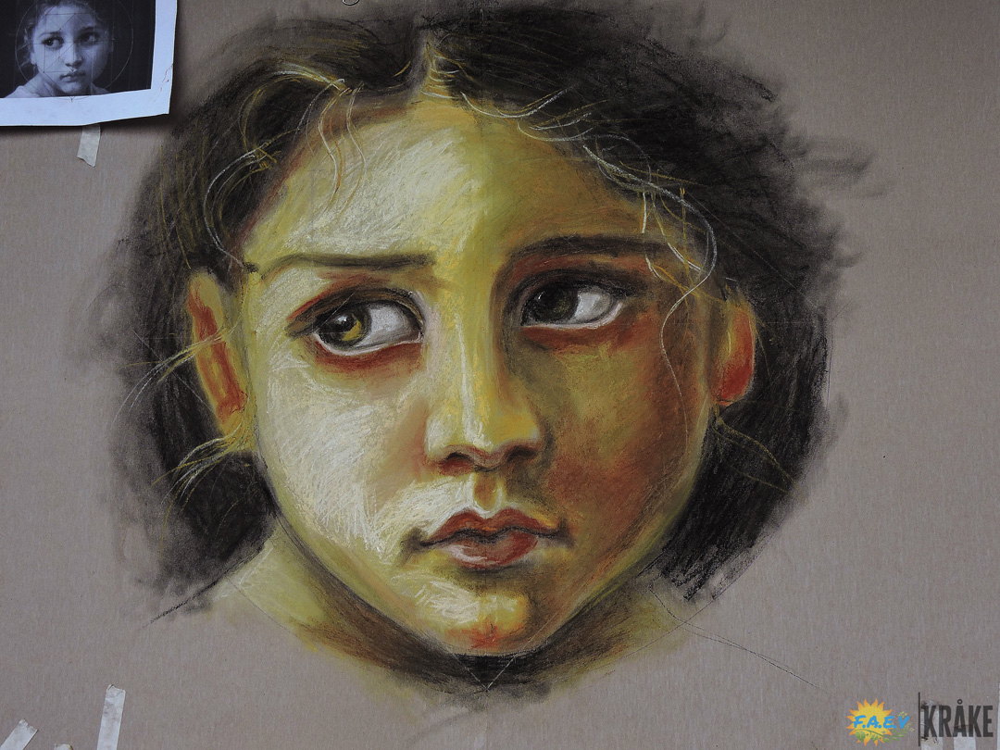

Dibujo
Taller de dibujo FAEV
La fundación arte educación para la vida FAEV ubicada en la localidad VI de Tunjuelito, barrio San Carlos, promueve espacios artísticos con talleres que tienen como objetivo el reconocimiento del ser y su valor a través del cuerpo desde las artes escénicas, las artes plásticas y la música para los niños de segunda infancia. Este taller de retrato está dispuesto para máximo 15 estudiantes entre los 7 y doce años pertenecientes a cualquier tipo de población que sientan interés por el dibujo.
Taller de dibujo FAEV
El retrato como mediador del reconocimiento de los valores propios, con el fin de distinguir la diversidad cultural en las facciones del rostro humano para decodificar la construcción de los patrones mediáticos y estéticos, requisito para la inclusión y legitimidad.
El Retrato como Mediador
Aprendamos del arte
Aprender sobre las proporciones y componentes del retrato para promover el autoconocimiento y amor propio como medio de expresión y comprensión de la diversidad
Nuestro Objetivo...
Los estándares de belleza en cualquier cultura son una construcción de identidad y el reflejo de su relación con el entorno, pero la actual situación de aislamiento y los nuevos y veloces escenarios digitales encarnados en los medios de comunicación audiovisuales como la televisión, los canales digitales, los videoclips musicales, los videojuegos y muy astutamente las redes sociales implantan estereotipos que influyen en gran parte de nuestra sociedad, siendo los más vulnerables nuestros niños y adolescentes. Debido a esta problemática surge este taller de retrato, el cual se propone desmontar esta construcción social del rostro en los participantes, haciendo énfasis en la diversidad de razas, grupos étnicos y diversos tipos de rostros, posibilitando así el amor propio, la auto aceptación, el empoderamiento y el reconocimiento y valor de la diversidad.
Proceso Indagarte
Creando conciencia y amor propio mediante un ejercicio de exposición artística colectiva.
Te estamos esperando
Si estas interesado en uno de nuestro programas, te invitamos a estar pendiente de nuestras proximas convocatorias.